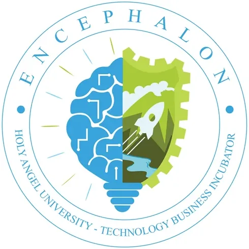

Encephalon TBI
Holy Angel University · Region III
Encephalon TBI is the Technology Business Incubator of Holy Angel University (HAU) in Angeles City, Pampanga, established with support from DOST-PCIEERD. Named after the Latin word for "brain," Encephalon reflects HAU's commitment to nurturing the brightest ideas and developing them into commercially viable technology-based ventures. With its dedicated website at encephalonhautbi.com and a dedicated Facebook page, Encephalon serves as the central innovation and startup hub for the Central Luzon region (Region III) among the Holy Angel University community.
- Category
- Technology Business Incubator
- Host institution
- Holy Angel University
- City
- Angeles City, Pampanga
- Region
- Region III
- Operating status
- Uncertain
About the Center
HAU, one of the Philippines' leading private universities in Central Luzon, is known for its strong engineering, technology, and business programs. Encephalon TBI leverages this academic strength — particularly through its KITTO (Knowledge, Innovation, Technology Transfer Office) — to connect student innovators, faculty researchers, and entrepreneurs with structured incubation support, mentorship, and commercialization pathways. The TBI's thematic banner in Technology Matching aligns with HAU's mission to bridge research and industry in the Pampanga innovation ecosystem.
Programs & Services
- Startup Incubation — Structured incubation program for technology-based ventures, providing workspace, business development support, and mentorship for early-stage startups
- Technology Matching — Specialized matchmaking between technology solutions developed at HAU and industry partners seeking innovative solutions — the center's thematic focus
- Pre-Incubation & Ideation — Programs for student and faculty innovators at the idea stage, supporting concept validation, business model development, and prototype planning
- Business Development Advisory — Guidance on business planning, market validation, product development, and investor readiness for technology enterprises
- IP Protection & Legal Advisory — Assistance with intellectual property filing, patent applications, and legal framework navigation for technology startups through KITTO
- DOST-PCIEERD Program Access — Connections to DOST funding instruments, Startup PH, and the national incubation network for commercialization and scale-up
- Demo Days & Pitching Events — Pitch competitions, demo days, and networking events connecting Encephalon incubatees with investors and industry partners
Contact
Sources & references
- hau.edu.ph/news/read/ef7de0b7dedde0a2722380a752fece7a2ccdd672/HAU+launches+…
- stii.dost.gov.ph/1321-2-prestigious-universities-in-pampanga-cater-to-prese…
Details are drawn from public records and the sources above, July 2026.
Startupreneur Innovation Hub · synced from the Notion catalog (July 2026) · status: published.